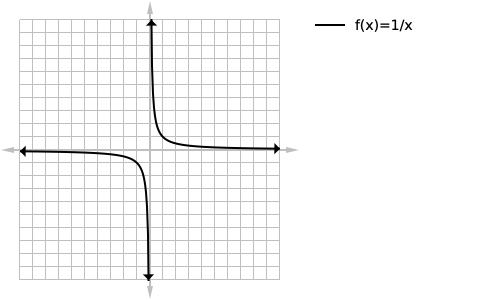
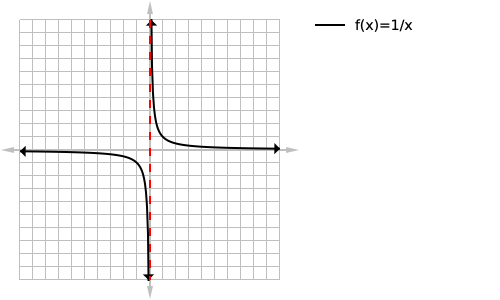
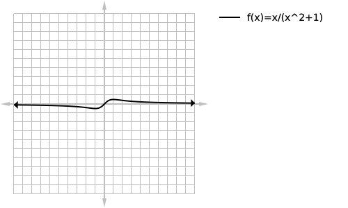

By:Mohammad-Ali Bandzar | July 3 2019
Vertical asymptotes (often abreviated to V.A) are vertical lines that a function will aproach and become infinitesimally close to but will never touch as the function aproaches infinity from one or both sides of the asymptote.
Three general types of asymptotes exist, vertical ones, horizontal ones, and oblique ones(also commonly called slant asymptotes). In this tutorial we will be focusing only on vertical asymptotes as they are the most common and the easiest to determine. The equation for a vertical asymptote will have an undefined/"infinite" slope as they will be vertical lines.
A vertical asymptote can be within rational functions by solving for when the denominator of a rational function equals zero. If the denominator never equals zero then your function is likely continuous for its entire domain and has no vertical asymptotes.
So for
loading...
Which when graphed looks like this:

We can see that the graph approaches but never reaches x=0 as shown with the dashed line:

We can then solve for the equation of this vertical asymptote by solving for when the denominator of the function is equal to zero in this case it is zero. We then want to label our asymptote at the bottom of the page next to the asymptote with its equation.

Below is a table of our function f(x) approaching our vertical asymptote but never reaching it from the left side, obviously the same would apply to the right as well.
| f(x) | result |
|---|---|
| f(-1) | 1 |
| f(-0.1) | -10 |
| f(-0.01) | -100 |
| f(-0.001) | -1000 |
| f(-0.0001) | -10000 |
| f(-0.00001) | -100000 |
| f(-0.000001) | -1000000 |
| f(-0.0000001) | -10000000 |
This isn't really a special case but in general if you have the same zero in both the numerator and denominator you do not get an asymptote but instead get a hole.
An example of this would be
loading...
If you were simpily solving for when the denominator was equal to zero you maybe mislead into believing that that equation has a vertical asymptote but in reality it does not. This could have been determined by either graphing, plugging in numbers close to where you believing the asymptote would be and recognizing that it isnt going toward infinity as demonstrated in the table above, or by seeing that the numerator and denominator have the same zero and recognizing that as a hole.
loading...
This is a sort of trick question because
loading...
has no real solutions telling us that the function will not have any vertical asymptotes.

loading...
We will start by solving for when the denominator is equal to zero.
loading...
loading...
We then want to verify that f(-2) is a vertical asymptote, we can do this two different ways.
The first way would be to plug in a very close number such as f(-2.000001) which is approx -3. Since the number isnt incredibly large(aproaching infinity) we can confirm that -2 is not a vertical asymptote. The other method would be to solve for the zeros of the numerator as follows:
loading...
In this case you could use either a scientific calculator or the quadratic formula to find the zeros to be -2 and -0.5 and since one of our numerator zeros was also one of our denominator zeros we can conclude that -2 is not a vertical asymptote, but instead a hole as shown below.

loading...
We will start off by setting the denominator equal to zero and solving:
loading...
loading...
loading...
loading...
We can then verify these zeros are valid asymptotes either of the two ways mentioned above although my personal preference is to solve for the numerators zeros which in this case is only x=0, confirming my belief that x=3 and x=-3 are both vertical asymtotes as demonstrated below:

- Remember that the function can never cross/touch the asymptote
- Make yourself comfortable graphing
- If you have difficulty graphing you can always fall back to drawing points and by using the table function on your calculator to generate points quickly.
- Make youself comfortable solving quadratic and cubic equations
- Don't forget to verify that the zero in the denominator is in fact an asymptote
- Don't forget that some functions like loading... have an infinite number of vertical asymptotes
- Use a graphing calculator/desmos.com to verify your solutions
THANKS FOR READING